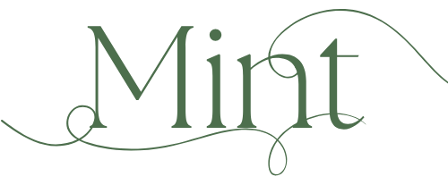

Wil je stap voor stap werken aan je gezondheid, met je darmen als startpunt? Doe dan mee aan het groepstraject van Mint. Met De Poepdokter Doeboek van Nienke Gottenbos als basis werken we 13 weken samen aan een gezonde leefstijl en een blije buik.
Het boek neemt je in 8 stappen mee. Wil je dat niet alleen doen en vind je een stok achter de deur fijn? Dan is dit groepstraject iets voor jou. Je krijgt persoonlijke begeleiding van Thirza Wondergem, natuurgeneeskundig (darmflora)therapeut bij Mint.
Meld je aan → Dinsdagochtend: nog 10/10 plekken · Vrijdagavond: nog 10/10 plekkenHet boek is opgezet in 8 weken. In het echte leven gaat verandering vaak minder snel. Soms heb je een drukke week of kost het gewoon tijd om iets nieuws vol te houden. Daarom krijgen de meeste thema's bij ons 2 weken. Zo heb je de ruimte om het echt eigen te maken.
Er zijn twee groepen. Elke groep heeft minimaal 6 en maximaal 10 deelnemers.
| Bijeenkomst | Dinsdagochtend 9.30–10.45 nog 10/10 plekken |
Vrijdagavond 19.30–21.00 nog 10/10 plekken |
|---|---|---|
| 1. Verteer meer (met kennismaking) | 19 januari | 15 januari |
| 2. Stress less & bewegen | 2 februari | 29 januari |
| 3. Vieren & ontspannen | 16 februari | 12 februari |
| 4. Rotzooi eruit | 2 maart | 5 maart |
| 5. Triggers eruit | 16 maart | 12 maart |
| 6. Eten voor je darmflora en fermenteren | 30 maart | 2 april |
| 7. EHBO bij darmklachten en afsluiting | 13 april | 16 april |
De eerste bijeenkomst duurt iets langer, omdat we dan ook kennismaken.
De prijs is inclusief btw, het boek, de verzendkosten, de intake met persoonlijk advies, 7 groepsbijeenkomsten, het materiaal in de Mint-app en een kleine verrassing.
Wil je niet in een groep, maar wel een stok achter de deur? Kies dan voor het individuele traject. Je werkt het boek op je eigen tempo door en Thirza helpt je op weg.
Het traject is voor iedereen die meer wil begrijpen van haar darmen en spijsvertering en daar zelf mee aan de slag wil. Ben je zwanger, heb je (in het verleden) een eetstoornis gehad of heb je klachten zoals bloed bij de ontlasting of onbedoeld gewichtsverlies? Neem dan eerst contact op met Thirza of je huisarts. Het traject is geen vervanging van medische zorg.
Ja. Je kunt een gratis kennismakingsgesprek van 15 à 20 minuten aanvragen.
Reken op 1 à 2 uur per week voor lezen en opdrachten. Daarnaast is er om de week een groepsbijeenkomst.
Nee. Je intake en je persoonlijke advies blijven tussen jou en Thirza. In de groep deel je alleen wat jij wilt.
De opdrachten volg je gewoon via het boek en de app en vragen kun je stellen in de groepsapp.
Je hebt geen account nodig. Je doet mee via een link, in je browser of in de app.
Nee, een groepstraject wordt niet vergoed. Een vervolgconsult bij Mint kan, afhankelijk van je aanvullende verzekering, wel vergoed worden.
Ja, je kunt in 4 maandelijkse termijnen betalen, met een kleine meerprijs. Voor de dinsdaggroep betaal je 4 × €79 (totaal €316), voor de vrijdagavondgroep 4 × €87 (totaal €348). De eerste termijn betaal je in december, na bevestiging van je plek. De laatste termijn betaal je in maart. Stop je onverhoopt eerder met het traject, dan blijven de resterende termijnen verschuldigd.
Bij minder dan 6 aanmeldingen gaat een groep niet door. Je kunt dan overstappen naar de andere groep of je krijgt je geld volledig terug.
Deze website is bedoeld ter oriëntatie en vervangt geen medisch advies, onderzoek of behandeling door een arts. Raadpleeg bij acute klachten of een spoedeisende situatie altijd je huisarts of bel 112. Stop nooit op eigen initiatief met voorgeschreven medicatie zonder overleg met je behandelend arts. De informatie op deze site is algemeen van aard, voor advies dat is afgestemd op jouw situatie is een consult nodig.